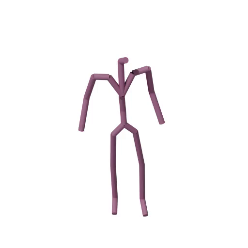
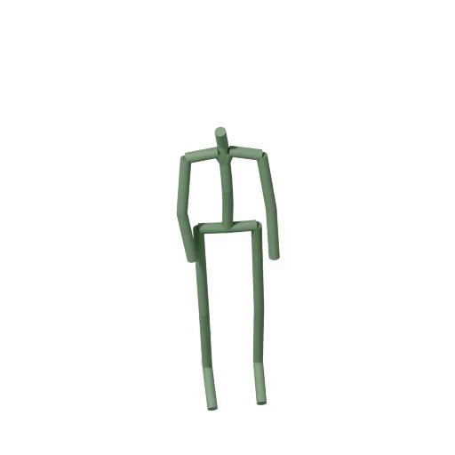
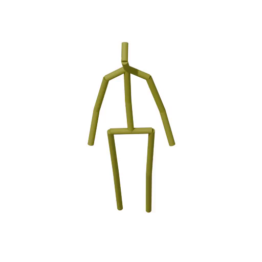
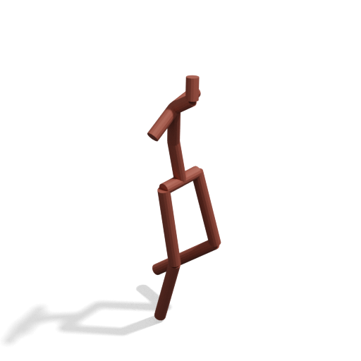
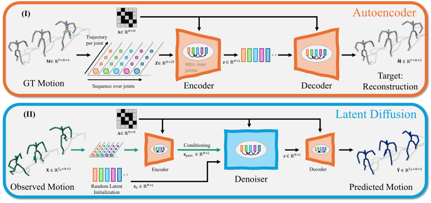
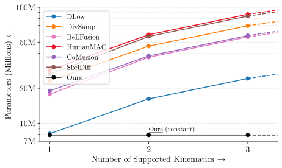
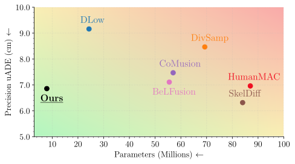

EquiFusion predicts the future from the past — and is the first model to do it for any skeleton format, even ones it has never seen, or with occluded and missing limbs.
observed past predicted future — all four sequences come from one single trained model.
Existing Stochastic 3D Human Motion Prediction models are fundamentally constrained by hard-coding the skeleton kinematics, severely limiting generalization, preventing cross-dataset training, and requiring complex data retargeting. We introduce EquiFusion, the first kinematics-agnostic model to solve this bottleneck, implementing a latent diffusion model with a permutation equivariant architecture. EquiFusion treats the kinematics' connectivity as an explicit input parameter, ensuring its internal computations are inherently agnostic to joint ordering and graph structure. This novel design enables truly cross-dataset generalization to unseen kinematics and unlocks novel zero-shot directions, such as motion prediction from partial or occluded observations and targeted limb generation. EquiFusion achieves state-of-the-art results on major benchmarks, being up to 75% more compact than previous kinematics-specific methods, while achieving faster training and inference. EquiFusion thus establishes a new, flexible standard for robust human motion prediction.
Every motion-capture convention defines its own skeleton kinematics: AMASS uses the SMPL body with 22 joints, H36M has 17 joints and no feet, and Nymeria, captured with ARIA glasses and XSens, uses 23 joints with a different spine and hip layout. New devices will keep producing new formats.
Previous stochastic motion prediction methods hard-code one kinematics into their network weights. The result: a separate trained model for every dataset, no cross-dataset training, and no way to handle occluded limbs or partial skeletons. The usual workaround — retargeting the input motion to the training skeleton — introduces conversion errors of up to 2.27 cm and a distribution shift, which is far from negligible when state-of-the-art prediction precision is around 7 cm.
Breaking this barrier — one model that trains on many datasets at once and runs on any skeleton — is a step toward human spatial AI and foundation models for human motion.
Different joint counts, positions, and connections — previous methods need one network for each.
Occluded limbs come in every combination — e.g. single arm, both arms, both legs, or mixed — and each one changes the kinematics again.
Previous approaches cannot — EquiFusion can: train on multiple kinematics, infer on any. We formalize and investigate this setting, zero-shot kinematics, for the first time in stochastic human motion prediction.

AMASS
Nymeria
H36M
OccludedFormally: the model is evaluated on kinematics disjoint from those seen at training, \(\mathbb{K}_{\text{train}} \cap \mathbb{K}_{\text{test}} = \emptyset\) — including partial kinematics with occluded or missing limbs. For our model trained only on AMASS data, Nymeria is a zero-shot kinematics scenario as well.
Previous methods
Trained on motion forecasting with the skeleton kinematics from AMASS — tested on the never seen skeleton of H36M. Baselines must first retarget the input to their training kinematics, while EquiFusion runs natively on the new skeleton. Our method clearly outperform baselines, and has the unique property to support training on both AMASS and Nymeria data, further improving performance.
Watch the baselines' hips and limb proportions: the retargeting they require corrupts hip bones and adds jitter, while EquiFusion stays coherent with the observation.
Models trained on AMASS, tested on MoYoga: extreme yoga poses far outside the training distribution. MoYoga shares the AMASS kinematics, so no retargeting is needed for any method — the default scenario for baselines.
On these balance-critical poses the baselines produce impossible torso twists or break the body apart; EquiFusion keeps the balance and the body intact.
Full limbs are removed from the input observation — a setting never seen during training. EquiFusion predicts a plausible future for the visible joints regardless of the missing part, and can even generate the missing limb on request. Baselines require hand-crafted completion heuristics and are shown where available.
Gray limbs are hidden from the model's input. The “Occluded legs (H36M)” tab combines both zero-shot settings at once: an unseen kinematics and occluded limbs.

What does it take for one network to serve any skeleton? To handle arbitrary kinematic chains, a model's learned weights must be independent of the number of joints and of their ordering. We identify permutation equivariance as the key property: reordering the joints of the input motion \(\mathbf{X}\) and of its adjacency matrix \(\mathbf{A}\) must simply reorder the output,
Lemma. Why cannot other methods do this? A model that accepts kinematic chains of any size must have a parameter count \(|\Theta|\) that does not depend on the number of joints \(J\): \(\tfrac{d|\Theta|}{dJ} = 0\), i.e. \(|\Theta| \in O(1)\). Popular motion-prediction architectures intentionally learn joint-dependent weights to capture dataset-specific priors — and therefore provably violate this constraint.
Theorem. What is a possible solution? For a general feature-extraction operation \(o(\mathbf{X}) = \mathbf{W}\mathbf{X}\mathbf{G}\) on \(\mathbf{X} \in \mathbb{R}^{J \times F}\), permutation equivariance under joint reordering \(\mathbf{P}\, o(\mathbf{X}) = o(\mathbf{P}\mathbf{X})\) for any permutation \(\mathbf{P}\) implies that \(|\Theta|\) is constant in \(J\). We prove that equivariance is a sufficient condition for handling arbitrary kinematics: a guarantee obtained by construction, not by data augmentation.
EquiFusion is built exclusively from operations that satisfy this equivariance requirement, so the guarantee holds end-to-end: a transformer autoencoder maps motion sequences to a latent space that preserves the joint dimensions, and a denoiser predicts future motion in this latent space, conditioned on the embedding of the observed past. The skeleton's connectivity is an explicit input to every stage — not a prior infused into the weights. And because nothing in the trained weights refers to a specific joint set, the same model accepts any adjacency matrix at inference — the basis for the zero-shot kinematics, occlusion handling, and limb generation shown above.
Graph convolutions aggregate features not through a learned matrix but through the normalized adjacency \(\mathbf{W} = \mathbf{D}^{-1}\mathbf{A}\), and attention runs over joint tokens without positional encodings. Every layer commutes with joint permutations, so the full network does too — with a formal guarantee, not data augmentation.
Each joint is encoded not as a position in 3D space but as the direction from its parent joint. Limb lengths stay consistent by design — zero stretching and jitter. This parametrization transfers across kinematics and improves existing SHMP methods too, without architecture or training paradigm changes.
The adjacency matrix is a runtime input, not a design constant. One trained instance serves AMASS, H36M, Nymeria, partial skeletons — or potentially any kinematics released in the future — with a parameter count that stays constant no matter how many joints or datasets.
The table below reports our new zero-shot kinematics results on H36M — evaluated with unified metrics (the u-prefixed columns) that we introduce to make precision comparable across skeletons with different joint counts and scales. The plots further show EquiFusion also reaches state-of-the-art results on standard, single-dataset benchmarks (AMASS, H36M, Nymeria), with a single, far more compact model.
fewer parameters than the closest competitor — constant at ∼7M while baselines grow toward 100M
faster training and inference, despite training on multiple datasets at once
improvement across all metrics in zero-shot kinematics settings, gaining up to 70% on realism
limb stretching and jitter — guaranteed by the bone-direction parametrization
| Precision ↓ | MM-GT ↓ | Div ↑ | Realism ↓ | Body Real ↓ | |||||||
|---|---|---|---|---|---|---|---|---|---|---|---|
| Method | native | uADE (cm) | uFDE (cm) | MAE (deg) | uMMA (cm) | uMMF (cm) | uAPD (m) | CMD | FID | str (%) | jit (%) |
| ZeroVel | ✓ | 11.77 | 17.88 | 6.753 | 13.74 | 18.56 | 0.000 | 22.822 | – | 0.00 | 0.00 |
| TPK + ret. | ✗ | 13.81 | 16.13 | 22.276 | 14.60 | 16.22 | 1.469 | 10.051 | 3.773 | 19.55 | 0.46 |
| DLow + ret. | ✗ | 12.71 | 14.80 | 21.887 | 13.60 | 14.97 | 2.060 | 9.204 | 2.875 | 20.26 | 0.53 |
| GSPS + ret. | ✗ | 9.29 | 11.91 | 8.107 | 10.85 | 12.35 | 2.069 | 7.409 | 1.735 | 11.51 | 0.38 |
| DivSamp + ret. | ✗ | 9.27 | 12.61 | 8.374 | 11.42 | 13.27 | 4.210 | 47.783 | 5.629 | 18.47 | 1.01 |
| BeLFusion + ret. | ✗ | 9.24 | 11.62 | 8.200 | 10.93 | 12.16 | 1.305 | 8.031 | 1.195 | 9.81 | 0.34 |
| CoMusion + ret. | ✗ | 10.07 | 12.15 | 21.066 | 12.49 | 12.96 | 2.070 | 8.587 | 1.426 | 15.98 | 0.51 |
| SkeletonDiffusion + ret. | ✗ | 10.81 | 14.99 | 14.947 | 12.75 | 15.42 | 0.992 | 7.616 | 5.252 | 11.25 | 0.28 |
| EquiFusion (A) | ✓ | 7.86 | 10.47 | 5.861 | 10.66 | 11.61 | 1.973 | 7.061 | 0.691 | 0.00 | 0.00 |
| EquiFusion (A+N) | ✓ | 7.71 | 10.21 | 5.683 | 10.58 | 11.36 | 1.797 | 7.349 | 0.504 | 0.00 | 0.00 |

